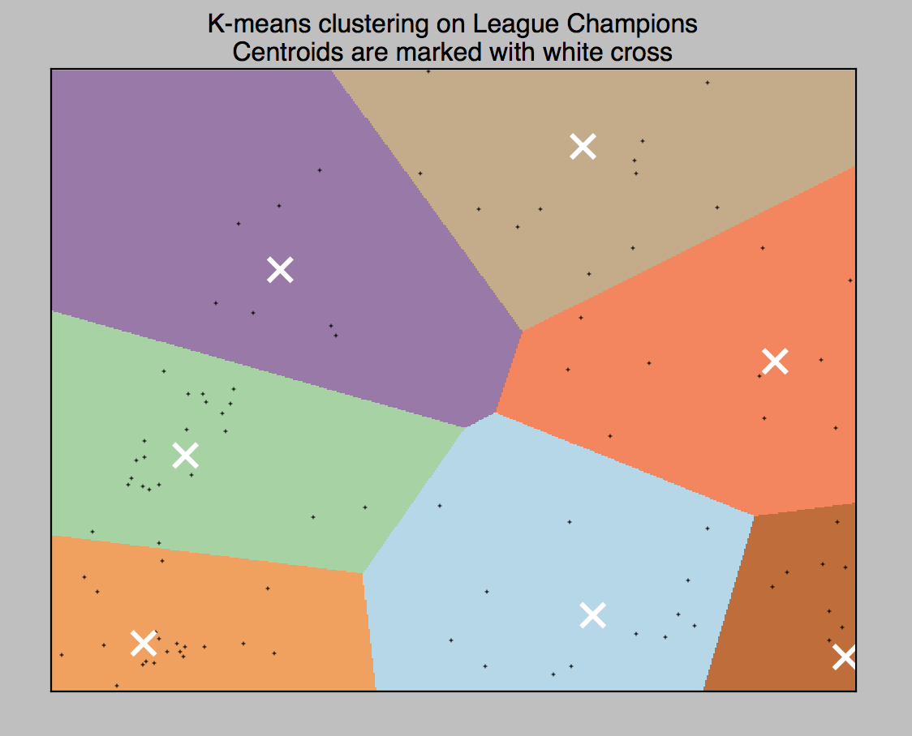

Welcome to Black Market Combat Analysis! Here we analyze the champions and there playstyles. Currently the data only contains data from a few regions (many, many games analyzed), but we will hopefully be able to expand on the data for more statistically sound analysis. Go to the champions tab and type in a champ name. Note, champ names have to be typed in exactly, so there is an autosuggest option. Keep in mind Wukong is typed as MonkeyKing (as Riot why, not us). Hopefully in the future we will have time to expand the search options.
Type in the champ you want to see. You will see a brief overview of the main role they are played in, main summoner spells, and the popular items. Following, you will see a table of the roles and some statisitcs behind the roles. The roles are based on the items the champs buy in the specific game, as well as the statistics of the game (such as damage dealt, minions killed, etc...) Some classifications might be a little unaccurate as of now, as more data is still being collected. Then you will see a neat little pie graph of the overall playrates, and a little chart of the overall results (averaged over all games). At the bottom is a place where you see champ synergy. Here, yellow indicates that is barely synergy (but still some synergy) and green indicates that the winrates of both champs rise significantly. Hover over the images and the background changes color to match the synergy level for easier comparisons.
Using Riot's API, we fetched data from over 40,000 games from the four main regions: NA, EUNE, EUW, and KR. We performed k-means clustering on the data set over 8 centroids for the main categories of fighters in League of Legends. Using Riven as the initial assassin centroid, Ashe as the initial marksman centroids, Renekton as the initial physical bruiser centroid, Lee Sin as the jungler, Annie as the mage, Braum as the support, Maokai as the tank, and Singed as the magical bruiser our k-means converged to produce 8 unique centroids. We selected numerous features for the analysis, being careful to normalize each feature first. We chose the stat modifiers from items, runes, number of each category of mastery, attack range, gold earned, cs gained, etc... The image below was created from python's pyplot.
We analyzed the data as we fetched it, writing python scripts to produce json files that would be used to create each individual champion page. We essentially fetched a match from Riot's servers, compiled the data into a neat little matrix that can be viewed as "data.csv". This matrix was then analyzed in other scripts, producing the common summoner spells, popular items, etc... View our scripts over at our GitHub by clicking the link above. This site was created entirely using Javascript, Python, CSS, and HTML.